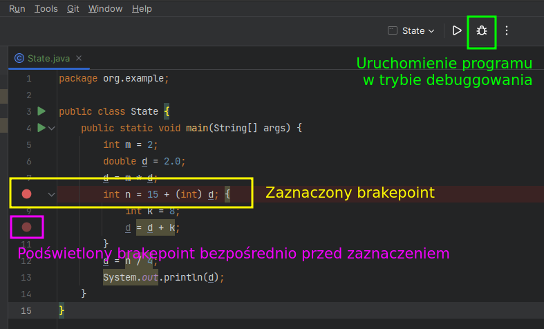
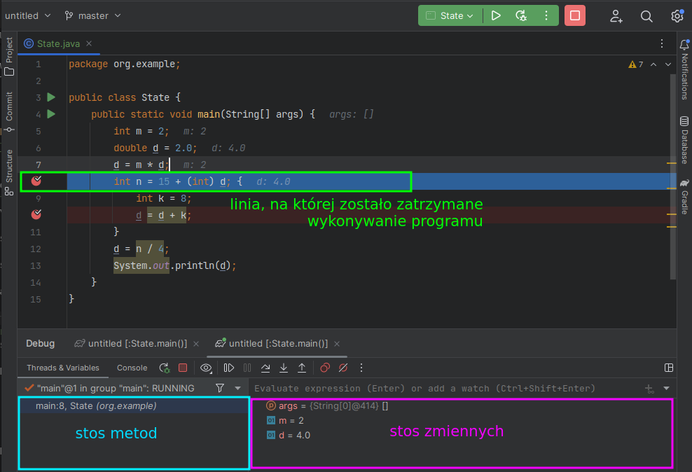
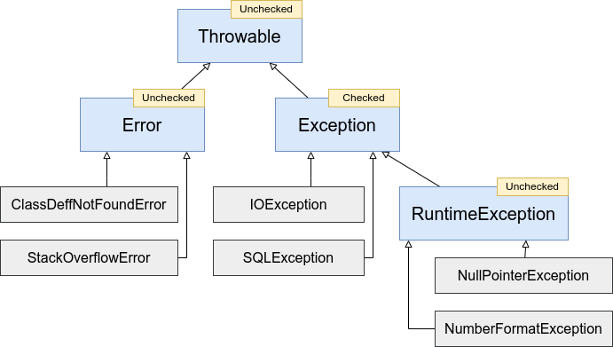

Języki i Techniki Programowania
ppor. mgr inż. Norbert Waszkowiak
e-mail: norbert.waszkowiak@wat.edu.pl
pomieszczenie: bud. 100 pok. 254B
konsultacje online i stacjanarnie: po wcześniejszym umówieniu
Zasady oceniania
- Ostateczna ocena z laboratoriów będzie wynikiem egzaminu z cześci laboratoryjnej. Za aktywność na laboratoriach i realizacje zadań student może otrzymać maksymalnie 20 punktów, które są wliczone do puli punktów z egzaminu.
- Obecność na wszystkich zajęciach jest obowiązkowa. Zaległości można usunąć uczestnicząc w zajęciach z inną grupą po wcześniejszym poinformowaniu prowadzącego. W przypadku, gdy zajęcia z pozostałymi grupami już się odbyły, można odrobić zajęcia na konsultacjach. Dopuszczalna liczba nieobecności: 1.
- Rozwiązania zadań z zajęć należy umiescić na platoformie MS Teams. Czas na wykonanie zadania to tydzień liczony od 23:59 dnia, w którym zostały zrealizowane zajęcia. Jeżeli termin oddania zadania przypadnie po rozpoczęciu sesji egzaminacyjnej, wtedy za termin oddania zadania przyjmuje się 24h przed rozpoczęciem sesji egzaminacyjnej.
Lab 1-2
Stos
IDE
Instrukcja instalacji IntelliJ IDEA
Zadanie 1 cz.1 👨💻
Wykonanie programu wymaga użycia stosu, na którym zapisywane są zmienne oraz ich wartości, tj. wartości prymitywne i odnośniki do obiektów - same obiekty są na tzw. składzie. W tym zadaniu zapisujemy stany stosu jako ciąg list par odpowiadający metodom na stosie i zmiennym zadeklarowanym i modyfikowanym w czasie ich wykonania. Lista par odpowiada metodzie na stosie, jest zapisana w nawiasie kwadratowym, a każda para składa się z nazwy zmiennej oraz jej wartości.Np. […, (x, 7),(y, true)]main to stan, w którym podczas wykonania metody main wartości zmiennych x i y są odpowiednio równe 7 i true.
Przeanalizuj następującą klasę i podaj stany stosu po wykonaniu linii 3, 4, 5, 6, 7, 8 i 10.
Debugger
(zwany również odpluskwiaczem) - narzędzie wbudowane w IDE umożliwiające śledzenie stosu i sterty (składu) w wybranych liniach kodu poprzez zatrzymywanie działania programu w danej linii. Program działający w trybie debuggowania będzie wykonywał kolejne linijki kodu do momentu, w którym nie trafi na „breakpoint”, czyli linię kodu zaznaczoną przez programistę. Po zatrzymaniu się programu w wybranej linii, IDE wyświetli aktualny stos zawierający zmienne aplikacji. Użytkownik może zwolnić breakpoint, po czym program będzie wykonywany do napotkania kolejnego breakpoint'a. W środowisku Intellij IDEA, aby wybrać linijkę kodu, w których program ma się zatrzymać (breakpoint), należy kliknąć po prawej stronie od numeru linii. Linia zapali się na czerwono oraz pojawi się czerwony okrąg.Debugger
Debugger
Zadanie 1 cz.2 👨💻
Podaj stany stosu wywołań i składu, gdy zostaną osiągnięte miejsca (1), (2) oraz (a) i (b).Użyj debuggera(odpluskwiacza) do sprawdzenia otrzymanych wyników.
Uwaga: proszę pamiętać o parametrze args metody main.
Stos trzeba odpowiednio rozrysować, żeby było widać piętra odpowiadające metodom.
Zadanie 2 👨💻
Zaimplementuj klasy Point i Line odpowiadające odpowiednio punktom i liniom w przestrzeni dwuwymiarowej z odpowiednimi konstruktorami. Klasy te mają zawierać metodę move pozwalającą na przesuwanie punktów i linii o wektor oraz metodę flip pozwalającą na przerzucanie symetryczne względem początku układu współrzędnych. Należy napisać testy metod i konstruktorów. Ile parametrów powinna mieć metoda move?Wskazówka: w celu testowania należy zaimplementować odpowiednio metodę toString() zwracającą dla danego obiektu reprezentujący go string.
Testy jednostkowe
Na potrzeby przeprowadzania testów jednostkowych w języku Java przygotowano narzędzia umożliwiające szybkie i sprawne pisanie testów jednostkowych nazwane Junit. Jest to biblioteka, która przy wykorzystaniu anotacji umożliwia definiowanie testów oraz przygotowanie obiektów do ich wykonania. Anotacja - to część gramatyki języka, reprezentującąca konkretną logikę, którą w czasie budowania projektu wykonuje kompilator. Anotacje w Javie wstawia się zazwyczaj przed deklaracją klas, metod i atrybutów. W przykładzie widocznym po prawej stronie wykorzystywana jest anotacja @Before oraz @Test. Metoda poprzedzona anotacją @Before w klasie, w której się znajduje, zostanie wykonana przed wywołaniem testów. Anotacja @Test poprzedzająca metodę reprezentuje pojedynczy test jednostkowy. Wynik testu będzie pozytywny, jeśli dla wyniku statycznej metody assertEquals wartości obu parametrów będą równe. W klasie Assert istnieją również inne metody umożliwiające przeprowadzanie testów, np. assertTrue, assertNotNull itp.. Intellij IDEA umożliwia wywoływanie pojedynczych testów lub wszystkich testów w klasie poprzez wciśnięcie odpowiednio zielonego przycisku przy numerze linii przy deklaracjach metod i przy deklaracji klasy.JUnit
import static org.junit.Assert.assertEquals;
import org.junit.Before;
import org.junit.Test;
public class CalculatorTest {
private Calculator calculator;
@Before
public void init() {
calculator = new Calculator();
}
@Test
public void testIfAddProperly() {
int result = calculator.add(4, 6);
assertEquals(10, result);
}
@Test
public void testIfMultiplyProperly() {
int result = calculator.multiply(5, 5);
assertEquals(25, result);
}
}
Lab 3-4
Kolekcje
java.lang.Iterable
java.util.Collection
java.util.List
java.util.Set
java.util.Queue
java.util.Map
Typ generyczny
Typ generyczny w Javie umożliwia tworzenie klas, interfejsów i metod, które są parametryzowane typem. Oznacza to, że możemy utworzyć klasę lub metodę, która będzie działać na różnych typach, a typ będzie określony w momencie tworzenia obiektu klasy lub wywoływania metody. Typ generyczny definiuje się za pomocą parametru typu, który jest umieszczany w nawiasach trójkątnych <>. Parametr typu może być dowolnym typem, w tym klasą, interfejsem. Parametry typu pozwalają na tworzenie kodu, który jest bardziej ogólny i elastyczny, ponieważ typy argumentów mogą być różne dla różnych wywołań klasy lub metody. Użycie typów generycznych pozwala na uniknięcie rzutowania typów i poprawia bezpieczeństwo typów, ponieważ typy argumentów są sprawdzane w czasie kompilacji. Typ generyczny może być używany nie tylko w klasach, ale także w interfejsach i metodach. Przykładem klasy generycznej w Javie jest ArrayList<T>, gdzie T oznacza typ elementów przechowywanych w liście. W momencie tworzenia obiektu ArrayList możemy określić typ elementów, na przykład ArrayList<String> lub ArrayList<Integer>.Typ generyczny
Collection<E>
List<E>
ArrayList<E>
- Jest to tablica dynamiczna, która może zwiększać swój rozmiar wraz ze wzrostem ilości elementów.
- W ArrayListach dostęp do elementów jest szybszy niż w LinkedListach, ponieważ elementy są przechowywane w pamięci w sposób ciągły, co pozwala na prostsze operacje odczytu i zapisu.
- W ArrayListach usuwanie elementów z początku lub środka listy może być kosztowne czasowo, ponieważ wymaga przesunięcia wszystkich elementów za usuwanym.
- Dostęp do elementów w ArrayListach jest O(1), a wyszukiwanie O(n).
LinkedList<E>
- Jest to lista dwukierunkowa, w której każdy element przechowuje referencję do swojego poprzednika i następnika.
- W LinkedListach dodawanie i usuwanie elementów z początku i środka listy jest szybsze niż w ArrayListach, ponieważ nie wymaga przesuwania innych elementów.
- W LinkedListach dostęp do elementów jest wolniejszy niż w ArrayListach, ponieważ elementy nie są przechowywane w pamięci w sposób ciągły, co wymaga dodatkowych operacji przeglądania listy w celu znalezienia danego elementu.
- Dostęp do elementów w LinkedListach jest O(n), a wyszukiwanie O(n).
Set<E>
Interfejs Set w języku Java reprezentuje kolekcję unikalnych elementów, bez określonej kolejności. Oznacza to, że elementy w Set nie mogą się powtarzać. Interfejs Set<E> oprócz metod pochodzących z interfejsu Collection<E> posiada wyłącznie metody wytwórze, np.:
HashSet<E>
reprezentuje zbiór nieuporządkowany, w którym elementy są przechowywane w tablicy skrótów (hash table). Zbiór ten nie gwarantuje, że elementy będą przechowywane w jakiejkolwiek określonej kolejności, ale zapewnia, że każdy element jest unikalny i posiada wyznaczalny hash code.
TreeSet<E>
reprezentuje zbiór uporządkowany, w którym elementy są przechowywane w drzewie czerwono-czarnym. Zbiór ten zapewnia, że elementy są przechowywane w porządku naturalnym (według relacji "mniejszy/równy"), a każdy element jest unikalny. TreeSet oferuje także dodatkowe metody, umożliwiające dostęp do pierwszego i ostatniego elementu w zbiorze, a także do elementów znajdujących się przed lub po danym elemencie.
LinkedHashSet<E>
reprezentuje zbiór uporządkowany, w którym elementy są przechowywane w kolejności dodania. Zbiór ten łączy funkcjonalności HashSet i List, oferując unikalność elementów oraz zachowanie kolejności dodania.
Queue<E>
Jak to wymawiać?Interfejs Queue w języku Java reprezentuje kolejkę, czyli strukturę danych, w której elementy są przechowywane w kolejności, w jakiej zostały dodane, a pobierane są w kolejności, w jakiej zostały dodane. Kolejka jest strukturą typu FIFO (First In, First Out), co oznacza, że element, który pierwszy został dodany do kolejki, jest też jako pierwszy pobierany z kolejki.
Queue<E>
Deueue<E>
to skrót od "Double Ended Queue", czyli kolejkę dwukierunkową. Deque rozszerza interfejs Queue, a więc dziedziczy po nim wszystkie jego metody. Dodatkowo, Deque oferuje także metody umożliwiające dodawanie i usuwanie elementów zarówno z początku, jak i z końca kolejki. Dzięki temu, w przeciwieństwie do zwykłej kolejki, Deque pozwala na dodawanie i usuwanie elementów z dowolnego końca struktury.BlockingQueue<E>
to interfejs, który oferuje metody blokujące. Metody te umożliwiają wątkowi czekanie na elementy w kolejce, jeśli kolejka jest pusta, lub czekanie na wolne miejsce w kolejce, jeśli kolejka jest pełna. Najważniejsze metody to put(E e), które umożliwia dodanie elementu do kolejki, ale jeśli kolejka jest pełna, to metoda zawiesza wątek wywołujący put(E e) aż do momentu, gdy miejsce w kolejce się zwolni. Metoda take() pobiera element z kolejki, ale jeśli kolejka jest pusta, to metoda zawiesza wątek wywołujący take() aż do momentu, gdy element pojawi się w kolejce. Metody BlockingQueue są często wykorzystywane w aplikacjach wielowątkowych, w których wątki muszą synchronizować swoje działania.TransferQueue<E>
to interfejs, który rozszerza interfejs BlockingQueue. TransferQueue oferuje dodatkowe metody umożliwiające bezpieczne przekazywanie elementów między wątkami. W BlockingQueue wątek, który chce dodać element do kolejki lub pobrać element z kolejki, może zostać zablokowany, jeśli kolejka jest pełna lub pusta, odpowiednio. Natomiast w TransferQueue dodanie elementu do kolejki może być zablokowane, jeśli nie ma wątku, który czeka na element, który ma być dodany, a pobranie elementu z kolejki może być zablokowane, jeśli nie ma elementu, który ma zostać pobrany. Metoda put() w BlockingQueue będzie blokować wątek, aż element zostanie dodany do kolejki, natomiast metoda transfer() w TransferQueue będzie blokować wątek, aż element zostanie pobrany z kolejki lub do kolejki zostanie dodany wątek, który będzie oczekiwał na element.Map<K, V>
Interfejs Map w języku Java reprezentuje strukturę danych, która przechowuje pary klucz-wartość. Każdy klucz musi być unikalny w ramach mapy, a wartość może być dowolnym obiektem. Interfejs Map zawiera wiele metod, które umożliwiają manipulowanie danymi w mapie, takie jak:HashMap<E>, TreeMap<E> i LinkedHashMap<E>
- HashMap to implementacja Map, która nie gwarantuje zachowania kolejności elementów. Elementy są przechowywane w taki sposób, aby umożliwić szybki dostęp do nich za pomocą klucza. TreeMap natomiast przechowuje elementy w drzewie, które jest posortowane według klucza. LinkedHashMap zachowuje kolejność elementów taką, jaką miała podczas dodawania.
- HashMap ma złożoność czasową O(1) dla operacji dodawania, usuwania i wyszukiwania elementów, pod warunkiem, że funkcja mieszająca (ang. hash function) działa dobrze i klucze są dobrze rozłożone w tablicy mieszającej. TreeMap ma złożoność czasową O(log n) dla tych samych operacji, a LinkedHashMap ma nieco gorszą złożoność czasową O(1) dla dodawania, usuwania i wyszukiwania elementów w porównaniu do HashMap, ale lepszą niż TreeMap.
- W przypadku HashMap i LinkedHashMap, kolejność elementów nie jest gwarantowana i może ulec zmianie w czasie, natomiast TreeMap gwarantuje posortowanie elementów według klucza.
- LinkedHashMap pozwala na iterowanie po elementach w kolejności dodania, co może być przydatne w niektórych sytuacjach.
Repozytorium z testami kolekcji
LinkZadanie 1
Rozważ użycie interfejsów Set, List, Queue i Map dla każdego z następujących przypadków (zobacz specyfikację Java API). Ustal, który z nich jest najbardziej odpowiedni oraz wyjaśnij, jak użyć go w implementacji.- Pewna firma chce odpowiednio zapisać swoich klientów. Każdego miesiąca będą oni losowo wybierani aby otrzymać mały upominek. Trzeba wybrać strukturę danych odpowiednią dla losowania.
- Ta sama firma chce ponazywać produkty imionami swoich pracowników. Każde imię będzie użyte tylko raz. Trzeba przygotować listę imion.
- W końcu firma ta zdecydowała się użyć tylko najczęściej występujących imion swoich pracowników do nazwania produktów. Policzono ilu pracowników posiada dane imię. Trzeba przygotować listę imion.
- Firma chce rozprowadzić bilety na mecze lokalnej drużyny siatkarskiej. Trzeba skonstruować odpowiednią listę oczekujących.
Zadanie 2
Napisz program, który będzie losował nazwiska klientów z listy (zobacz punkt 1. poprzedniego zadania), a następnie je usuwał. Dokładniej, zaimplementuj klasę Names z obiektowym atrybutem names odpowiadającym wspomnianej liście i z obiektową metodą choose(), która zwraca losowo wybrane nazwisko z listy names usuwając je jednocześnie.Zadanie 3
Napisz program, który będzie wybierał najczęściej występujące imiona klientów z listy (zobacz punkt 3. zadania 1.), a następnie je usuwał. Dokładniej, zaimplementuj klasę FrequentNames z obiektowym atrybutem frequentNames i z obiektową metodą choose(), która zwraca najczęściej występujące imię z listy frequentNames usuwając je jednocześnie, oraz metodę insert(String name) wstawiającą imię do danej listyZadanie 4
Zaimplementuj listy jednokierunkowe zawierające liczby całkowite (typ int) bez użycia kolekcji. Lista ma się składać z kotwicy, tj. obiektu klasy Anchor, oraz elementów, tj. obiektów klasy Element. Obiekty klasy Element mają posiadać atrybut val typu int oraz opcjonalnie wskaźnik na następny element listy, dokładniej obiekt klasy Element. Klasa Anchor ma posiadać atrybut first typu Element wskazujący na pierwszy element listy oraz metody:- insertAtTheFront(int x) - wstawiającą liczbę x na początek listy
- insertAtTheEnd(int x) - wstawiającą liczbę x na koniec listy
- removeFirst() - usuwającą pierwszy element listy
- removeLast() - usuwającą ostatni element listy
- toString() - zwracająca string reprezentujący daną listę
- equals(Object o) - sprawdzającą, czy dwie listy zawierają dokładnie te same liczby w tym samym porządku; jeśli tak, ma ona zwracać true, w przeciwnym wypadku false
Lab 5-6
Metody i atrybuty statyczne. Wyjątki
Pola (atrybuty) statyczne
Pola statyczne są współdzielone przez wszystkie obiekty klasy i są inicjowane tylko raz, gdy klasa jest ładowana przez maszynę wirtualną. W przeciwieństwie do pól niestatycznych, pola statyczne mogą być odczytywane i modyfikowane bez tworzenia instancji klasy. Są one często używane do przechowywania danych, które są wspólne dla wszystkich obiektów klasy, np. stałych lub liczników.Metody statyczne
Meotdy statyczne to takie, które działają na poziomie klasy, a nie na poziomie obiektów. Metody te są zwykle używane do wykonania operacji, które nie wymagają dostępu do pól niestatycznych i które nie są związane z określonymi instancjami klasy.np. int result = MathUtil.factorial(5);
Wyjątki
Wyjątki w języku Java to mechanizm pozwalający na obsługę błędów i wyjątkowych sytuacji podczas wykonywania programu. W momencie wystąpienia błędu w czasie działania programu, maszyna wirtualna Javy generuje wyjątek (exception), który przerywa normalny przepływ wykonywania kodu i przechodzi do bloku kodu obsługi wyjątku. Obsługa wyjątków
Propagacja wyjątków
Gdy wyjątek jest zgłaszany przez metodę, to metoda może albo obsłużyć wyjątek (przy użyciu bloku try-catch), albo przekazać wyjątek wyżej w stosie wywołań do wywołującej metodę. Jeśli wyjątek nie jest obsłużony przez żadną metodę na stosie wywołań, to program kończy działanie, a wyjątek jest wyświetlany w konsoli.Deklarowanie własnych wyjątków
Deklarowanie własnych wyjątków w Javie pozwala na obsługę wyjątków niestandardowych, czyli takich, które nie są zdefiniowane w standardowej bibliotece Javy.Aby zadeklarować własny wyjątek w Javie, należy stworzyć nową klasę, która rozszerza klasę Exception lub jedną z jej podklas. Należy zdefiniować konstruktor, który przekazuje wiadomość do klasy bazowej za pomocą słowa kluczowego super. Następnie można dodać dodatkowe pola i metody, które pomogą w obsłudze wyjątku.
Zadanie 1
Zaimplementuj klasę Factorial (silnia) z metodą factorial(int x) liczącą silnię x. Jaką sygnaturę powinna mieć ta metoda.- Zachowując tę sygnaturę, zmodyfikuj tę implementację tak, aby dla x < 0 metoda nie zwracała wartości
- Zaimplementuj metodę factorial1, która dla liczb ujemnych będzie rzucać wyjątek MyException. MyException ma bezpośrednio rozszerzać Exception. Jak trzeba zmienić sygnaturę metody factorial?
- Jaka jest różnica pomiędzy tym a poprzednim rodzajem wyjątków?
- Przetestuj obie metody implementując metodę main tak, żeby w niej metody były sprawdzane dla ciągu argumentów typu: -3, -1, 0, 1, 2, 4, 5. Wskazówka: można użyć metody toString.
- Użyj metody printStackTrace do pokazania zawartości stosu wywołań w momencie rzucania wyjątku.
Zadanie 2
Zaimplementuj klasę DoTrzechRazySztuka, która sczytuje z konsoli liczbę float i wypisuje ją w postaci np. x = 1.2 (zobacz slajdy z pierwszego wykładu). Metoda ta powinna dopuszczać maksymalnie dwa błędy w typie danych, np. jeśli podczas pierwszej próby wpisany będzie string abc, to jest to błąd i metoda powinna zażądać innej danej i tak maksymalnie dwa razy. Metoda ma kończyć swoje wykonanie po pierwszym wprowadzeniu float lub po trzech nieudanych próbach.Zadanie 3
Zaimplementuj klasy Point, Line, Polygon, Group. Przedostatnia klasa ma implementować wielokąty wyznaczone przez pewną liczbę punktów. Ostatnia klasa ma implementować grupy figur (jak w przypadku edytorów typu PowerPoint). Wszystkie klasy mają implementować interfejs Figur (lub klasę abstrakcyjną z abstrakcyjnymi metodami min. equals(Object o) żeby wymusić nadpisanie). Zaimplementuj również klasę Group grupująca figury i również implementującą Figure. Figure ma posiadać metody:- move(double dx, double dy) przesuwającą daną figurę
- flip() przerzucająca dana figurę
- equals(Object o) sprawdzającą, czy figury są równe
- toString() zwracająca łańcuch znaków (String) reprezentujący daną figurę
Lab 7-8
Operacja na kolekcjach z użyciem strumieni
Programowanie funkcjonalne w Javie cz.1
Programowanie funkcjonalne w Javie jest paradygmatem programowania, w którym skupiamy się na tworzeniu programów poprzez składanie funkcji i operacji. W przeciwieństwie do programowania proceduralnego, programowanie funkcjonalne kładzie nacisk na niemutowalność danych i unikanie efektów ubocznych. Na przestrzeni czasu, wsparcie dla programowania funkcjonalnego w Javie uległo znacznemu rozwojowi. Wprowadzenie funkcji lambda w Javie 8 stanowiło przełomową zmianę, umożliwiając programistom pisanie kodu w bardziej deklaratywny sposób. Funkcje lambda pozwalają na przekazywanie funkcji jako argumentów do innych funkcji oraz tworzenie anonimowych funkcji, co jest niezwykle przydatne w programowaniu funkcjonalnym. Dodatkowo, Javie 8 wprowadziło strumienie (streams), które umożliwiają operacje sekwencyjne i równoległe na zbiorach danych. Strumienie w Javie dostarczają wiele funkcji pośrednich i końcowych, które można łączyć w celu manipulacji i przetwarzania danych w sposób bardziej funkcyjny. Wykorzystanie strumieni pozwala programistom unikać pętli for i for-each, co przyczynia się do bardziej czytelnego i modułowego kodu.Programowanie funkcjonalne w Javie cz.2
Kolejne wersje Javy wprowadzały również nowe funkcjonalności i usprawnienia związane z programowaniem funkcjonalnym. Java 9 wprowadziła prywatne metody interfejsów, które umożliwiają bardziej czytelną i modułową implementację interfejsów funkcyjnych. Java 10 wprowadziła kolekcje niezmiennych (immutable collections), które są zgodne z zasadami programowania funkcjonalnego. Wersje Javy 11 i 12 skupiały się na optymalizacji wydajności operacji na strumieniach oraz wprowadzały dodatkowe usprawnienia w dziedzinie programowania funkcyjnego. Warto zwrócić uwagę na inny język programowania oparty o JVM: Scale. W której programowanie funkcyjne jest jej integralną częścią. Scala oferuje wiele funkcji i konstrukcji, które umożliwiają programowanie funkcyjne. Przykładem jest mechanizm funkcji anonimowych, który pozwala na definiowanie funkcji bez nadawania im nazwy. Funkcje anonimowe są powszechnie wykorzystywane w programowaniu funkcyjnym, umożliwiając przekazywanie ich jako argumentów do innych funkcji oraz tworzenie wyrażeń lambda. Dodatkowo, w Scala istnieje wiele bibliotek i frameworków, które wspierają programowanie funkcyjne w skali. Przykładem jest Apache Spark, który został napisany w Scali i wykorzystuje jej funkcyjne podejście do przetwarzania dużych zbiorów danych.Optional<T>
W podejściu funkcyjnym unikamy bezpośredniego używania referencji na null. Jeśli chcemy zaznaczyć, że referencja jest opcjonalna, to używamy typu Optional, który jest kontenerem dla obiektu dowolnego typu.
Referencja na typ Optional nigdy nie powinna być nullem, obiekty Optional tworzymy przy pomocy statycznych metod
Stream<T>
Programowanie funkcyjne jest zorientowane na wysokopoziomowe przetwarzanie danych, ze względu na powtarzające się wzorce przetwarzania danych. Strumień w Javie stanowi abstrakcję sekwencji danych, która może być procedowana w dowolny sposób zgodnie z ustalonymi operacjami, i w odpowiedniej kolejności. Produktem przetwarzania strumienia może być:- pojedynczy obiekt - mówimy wtedy o agregacji lub redukcji danych, np. największy element, łączna liczba elementów, łańcuch znaków,
- wiele obiektów, które niekoniecznie są tego samego typu co oryginalny strumień, np. kolekcja, tablica.
Tworzenie strumieni
W zależności od źródła danych strumienie mogą być skończone albo nieskończone.- Skończone strumienie - bazują na typach o określonej liczbie elementów, takich
jak
tablice, kolekcje dowolnego typu, rekordy w bazie danych.
- Nieskończone strumienie - generują dane w nieskończoność na podstawie
określonego wzorca.
Typu operacji na strumieniach
- Utworzenie strumienia na podstawie źródła - zawsze zwraca typ Stream z odpowiednim typem w miejscu typu generycznego. Wyjątkiem są strumienie specjalizowane dla typów prymitywnych.
- Operacje pośrednie - przeprowadzają pewnego rodzaju transformację strumienia w nową postać zawierającą dodatkową operację. Operacje tego typu łączą się w łańcuch, który może odfiltrowywać niechciane obiekty, sortowaćje według ustalonego, oraz konwertować wartości w obiektach. Dopóki nie zostanie ustalona operacja terminująca, żadna operacja pośrednia się nie wykona.
- Operacja terminująca - produkuje ostateczny rezultat przetwarzania, który może mieć postać zredukowaną (zagregowaną) do pojedynczego obiektu lub tworzyć nową kolekcję, tablicę, itp.
Zadanie 1
Większość problemów zapisanych w formie imperatywnej “jak to ma się stać” możemy zapisać przy pomocy podejścia funkcyjnego “co ma zostać zrobione”. Przepisz poniższą funkcję, używając podejścia funkcyjnego. Wykorzystaj klasę IntStream do wygenerowa‐ nia strumienia liczb.Zadanie 2 cz.1
Zaimplementuj metody pozwalające pobierać informacje na temat użytkowników z pewnego źródła. Do implementacji wykorzystaj podejście funkcyjne z użyciem strumieni. Model użytkownika jest następujący:Zadanie 2 cz.2
Serwis do zaimplementowania jest następujący:Zadanie 3 cz. 1
Zaimplementuj klasyczną grę w wojnę. Rozpocznij od wygenerowania talii 52 kart, zgodną z następującym modelem.Zadanie 3 cz. 2
Zawodnicy równocześnie wykładają po jednej karcie i porównują ich wartości (względem starszeństwa – kolory nie odgrywają roli). Gracz mający kartę o wyższej wartości odbiera karty i kładzie je pod spodem swojej talii. Zawodnicy równocześnie wykładają po jednej karcie i porównują ich wartości (względem starszeństwa – kolory nie odgrywają roli). Gracz mający kartę o wyższej wartości odbiera karty i kładzie je pod spodem swojej talii. Jeśli karty mają taką samą siłę (as na asa, król na króla, itp.), rozpętuje się wojna; należy odkryć po jednej karcie, położyć je koszulkami do góry na swoich kartach odkrytych, a następnie wyciągnąć następną kartę, położyć odkryte na zakrytych kartach i wówczas są one porównywane. Karta o wyższej wartości wygrywa, a zwycięzca wojny odbiera wszystkie karty wykorzystane w wojnie. Proces jest powtarzany, jeśli w okresie wojny znowu nie można wyłonić zwycięzcy. Wygrywa ten, kto pierwszy zabierze wszystkie karty przeciwnikowi. Dodatkowo zliczaj liczbę tur, jakie zostały wykonane, aby wyłonić zwycięzcę. Czy to się uda?Zadanie domowe
Przed kolejnymi zajęciami przećwicz indywidualnie integrację z zewnętrznym API, która jest opisana w kolejnej sekcji.
Lab 9-10
Pokemony i inne stwory 👻
Interfejs API
Interfejs API (Application Programming Interface) to zbiór zdefiniowanych reguł i protokołów, które umożliwiają komunikację i integrację między różnymi programami lub aplikacjami. API definiuje, jak programy mogą komunikować się ze sobą, jakie operacje można wykonać oraz jak przekazywać dane. Interfejs API działa na zasadzie umożliwiania jednemu programowi (nazywanemu klientem) korzystanie z funkcji lub danych udostępnionych przez inny program (nazywanego serwerem). Klient wysyła zapytania do serwera, a serwer odpowiada na te zapytania, udostępniając żądane informacje lub wykonując żądane operacje. API może przyjmować różne formy, takie jak REST (Representational State Transfer), SOAP (Simple Object Access Protocol) lub GraphQL. RESTful API jest obecnie jednym z najpopularniejszych i szeroko stosowanych rodzajów interfejsów API. Oferuje ona zestaw zasad, które definiują sposoby dostępu do zasobów za pomocą standardowych metod protokołu HTTP, takich jak GET, POST, PUT i DELETE. Interfejsy API są szeroko stosowane w dziedzinie programowania aplikacji, zarówno na poziomie internetowych usług, jak i lokalnych aplikacji. Przykłady zastosowań interfejsów API to integracja zewnętrznych usług, jak płatności online czy serwisy mapowe, pobieranie i udostępnianie danych z baz danych lub serwisów internetowych, automatyzacja zadań za pomocą skryptów i wiele innych. Dzięki interfejsom API programiści mogą tworzyć aplikacje, które wykorzystują funkcjonalności lub dane udostępniane przez inne systemy, bez konieczności ponownego wynajdywania koła i tworzenia wszystkiego od zera. Interfejsy API są kluczowe dla tworzenia zintegrowanych i elastycznych systemów informatycznych.Publiczne API
W internecie dostępnych jest szerege publicznych darmowych Rest API. Przykładowa lista znajduje się tutaj. Są one idealną możliwością do przećwiczenia integrowania naszych aplikacji z zewnętrznymi serwisami.
Zadanie?
Ostatnie zadanie laboratoryjne będzie polegało na skorzystaniu z zewnetrznego API i wyciągniecie za jego pomocą pewnych informacji. Czas realizacji zadania będzie ograniczony, tzn. do końca trwania laboratoriów.
Na następnych slajdach zostało przygotowane przykładowe zadanie, które ma wdrożyć w korzystanie z zewnętrznego i ułatwić wykonanie ostatniego zadania.
Przykładowe Zadanie
Używając The Rick and Morty API opracuj program umożliwiający sprawdzenie, którzy bohaterowie występowaliw tym samym odcinku co podany bohater, np. Ogór Rick.
Krok 1. Zapoznanie sie z dokumentacją API
Pierwszym krokiem w tego typu zadaniach będzie przeanalizowanie dostępnych endpointów i określnie z których należy skorzystać, aby osiągnąć podany cel. Zaglądając do dokumentacji dostępnej tutaj (do czego mocno zachęcam) zauważamy dwa interfejsy API: REST i GraphQL. Wybór trafia na REST.Krok 2. Określenie używanych endopointów
Należy, wieć skorzystać z następujących endopointów, aby osiągnąć cel:- Character/Filter
Character - w pierwszym etapie wyszkujemy bohatera o podanej nazwie,
na poziomie programu musimy zapewnić aby tylko jeden wpis pasował do podanej nazwy.
W ten sposób uzyskamy informacje o bohaterze, jak i odcinkach w których występował.
Ponieważ wszystkie operacje są typu GET, można podejrzeć ich wynik bezpośrednio w przeglądarce przechodząc pod wskazany adres. Wszystkie odpowiedzi są zwracane w formacie JSON.
Request, który nas nie satysfakcynuje, ponieważ zwraca więcej niż jednego bohatera: https://rickandmortyapi.com/api/character/?name=rick
Request, który nas satysfakcynuje, ponieważ dokładnie jednego bohatera: https://rickandmortyapi.com/api/character/?name=pickle
- Episode/Single
Episode - Wraz z odpowiedziami z poprzedniego requestu przesłane są
również ścieżki do odcinków, w których występował bohater.
Przykładowy request https://rickandmortyapi.com/api/episode/24
- Character/Single
Character - Wraz z odpowiedziami z poprzedniego requestu przesłane
są również ścieżki do bohaterów, którzy występowali w tym samym odcinku.
Przykładowy request https://rickandmortyapi.com/api/character/329
Krok 3. Użycie zwracanych ścieżek do zasobów
Zwracanie ścieżki do zasobu przez API jest powszechną praktyką w programowaniu aplikacji internetowych. API (Interfejs programowania aplikacji) pozwala na komunikację między różnymi systemami lub aplikacjami poprzez udostępnienie zestawu zdefiniowanych endpointów. Referencje do powiązanych zasobów mogą być dostarczane w różnych formatach, takich jak adresy URL, identyfikatory zasobów lub inne unikalne oznaczenia. Przykładowo, w odpowiedzi na żądanie pobrania szczegółów użytkownika, odpowiedź mogłaby zawierać nie tylko informacje o samym użytkowniku, ale także odnośniki do innych powiązanych zasobów, takich jak jego zamówienia, komentarze lub profil publiczny. Dzięki tym referencjom klient API może łatwo nawigować między różnymi zasobami, wykorzystując dostępne odnośniki. Na przykład, klient może użyć adresu URL do zamówień, aby pobrać listę zamówień danego użytkownika lub wywołać odpowiednie zapytanie w celu złożenia nowego zamówienia dla danego użytkownika. Zamiast budować ścieżki URL "od zera" skorzystamy właśnie z tych dostarczonych referencji.Krok 4. Pierwsze zapytanie
org/example/RickAndMortyFetcher.java
Efektem tego kodu będze wypisanie w terminalu odpowiedzi z serwera
w formacie JSON. Nie jest to forma, która nasz zadowala, odczytanie nazwy bohatera nie jest
możliwe, ponieważ wszystkie informacje są zawarte w jednym Stringu.
Mamy dwie możliwości: skorzystanie z biblioteki umożliwiającej
operowanie na JSONie za pomocą dostarczonych w jej ramach metod lub skorzystanie z DTO ( Data Transfer
Object). Wybór trafia na DTO. Wcześniej jednka dokonajmy reafactoru kodu.
Krok 4. Pierwsze zapytanie
org/example/RickAndMortyFetcher.java
Nie ma potrzeby komentowania każdej linijki kodu. Kod powinnien być
na tyle czytelny, aby "sam" się dokumentował. Komentarze są wskazane wyłącznie, jeżeli mimo
naszego
wysiłku kod nie jest czytelny, np. wyjątkow skąplikowana logika działania.
Krok 4. Pierwsze zapytanie
org/example/RickAndMortyFetcher.java
Metody powinny być krótkie. Nie ma ściśle określonej długości.
Cześć logiki należy wynieść poza main, aby kod był bardziej obiektowy niż
strukturalny
Krok 4. Pierwsze zapytanie
org/example/RickAndMortyFetcher.java
Komunikaty w terminalu nie są potrzebne.
Krok 4. Pierwsze zapytanie
org/example/RickAndMortyFetcher.java
Utworzenie klienta Http jest względnie kosztowną operacją, nie ma
potrzeby aby za każdym wywołaniem był tworzony nowy klient. W tym momencie należy skorzystać z
private static final w terminalu nie są potrzebne.
Krok 4. Pierwsze zapytanie
org/example/RickAndMortyFetcher.java
Musimy również zawęzić łapane wyjątki w ramach metody
fetch.
Krok 4. Pierwsze zapytanie
org/example/RickAndMortyFetcher.java
Skrócić można również ciało try w metodzie
fetch.
Krok 5. Data transfer object
org/example/CharacterResponseDTO.java
Tak wygląda, jedna z klas która posłuży do przemapowania odpowiedzi
z serwa. Jej pola są takie same jak te w JSONie.
Krok 5. Data transfer object
org/example/CharacterResponseDTO.java
Zapis ten można skrócić korzystając z rekordów (Records). Ten zapis
realizuje dokładnie to samo co widok wcześniej.
Krok 5. Data transfer object
org/example/CharacterDTO.java
Klasa wykorzystywana we wcześniejszej
CharacterResponseDTO. Nie są tutaj obecne wszystkie pola zwracane w odpowiedzi.
Ponieważ będziemy korzystali z mappera z biblioteki Jackson, musimy zaznaczyć jak reagować w
przypadku gdy wartość z JSONa, nie zostanie znaleziona. Dokonujemy tego za pomocą adnotacji
@JsonIgnoreProperties(ignoreUnknown = true).
Krok 5. Data transfer object
org/example/InfoDTO.java
Kolejna klasa wykorzystywana we wcześniejszej
CharacterResponseDTO. Służy ona do paginacji wyników, której świadomie nie
obsłużymy w ramach zadania.
Krok 6. Użycie mappera
build.gradle.kts
Aby skorzystać z biblioteki Jackson, należy dodać odpowiednią
zależność. Po dodaniu nowej zależności w InteliliJ wyświetli się ikonka Słonika, należy ja
kliknąć, aby IDE załadowało nowe bilbioteki.
Krok 6. Użycie mappera
org/example/RickAndMortyFetcher.java
Wracamy do klasy RickAndMortyFetcher, w której
skorzystamy z mappera z biblioteki Jackson. Tworzenie ObjectMapper jest również
kosztowną operacją, dlatego tworzymy go jako private static final.
Krok 6. Użycie mappera
org/example/RickAndMortyFetcher.java
Tworzymy nowa metodę fetchCharacterByName i ograniczamy dostęp starej metody
fetch. Metoda readValue z klasy ObjectMapper
mapuje
wartośc String
zapisaną w formacie JSON, na listę utoworzoną przez nas klasę CharacterDTO
Krok 6. Użycie mappera
org/example/RickAndMortyFetcher.java
Wypiszmy, wszystkie wersje Summer występujące w
serialu w czytelnym
dla człowieka formacie.
Krok 7... i dalej
Kolejne kroki nie zostały już opisane w ramach tej prezentacji. Dokończenie realizacji zadania pozostawione jest, jako ćwiczenie doskonalające.
Ukończone całe zadanie jest dostępne tutaj.
Stan programu na koniec kroku 6tego jest dostępny na tej gałęzi.